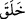
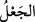
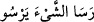
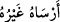
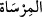
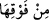

10. O, yeryüzüne sâbit dağlar yerleştirdi. Onu bereketli kıldı ve orada tam dört
günde isteyenler için fark gözetmeden gıdâlar takdir etti.
“O, yeryüzüne sâbit dağlar yerleştirdi” ifâdesi (
) “yarattı” fiiline mâtûf olup
sılanın hükmüne dahildir; yani “yaratan ve ... yerleştiren zâtı mı inkâr ediyorsunuz!?”
demektir. Buradaki (
) masdarı, ibdâ’î olup bundan maksad yaratmayı takdir
etmesidir; yoksa bilfiil yaratması değildir. (
)’den maksad da sâbit ve yerleşik
dağlardır. Yani metin ve yüce dağlar demektir. Bu kelime (
) şeklinde
kullanılır ki “Nesne sâbitleşti.” demektir. Başka biri tarafından sâbitleştirildiğinde ise
(
) denir. Geminin durup demir attığı yer mânâsındaki (
) lâfzı da buradan
gelmektedir.
(
) ifâdesindeki harf-i cerr, ya “yerleştirdi” üzerine ya da “sâbit dağlar”ın sıfatı
olan gizli bir kelimeye mâtuftur. Buna göre mânâ; “yeryüzü üzerinde sâbit dağlar
yerleştirdi” ya da “yeryüzü üzerinde bulunan ve ondan daha yüksek olan sâbit dağlar
yerleştirdi” şeklinde olur. Böylece dağların sağladığı yararlar, isteyenler için daha
görülür olmuş olacak ve bakanlar için dağların rehberlik ve kılavuzluk özelliği ortaya
çıkmış olacaktır. Yoksa yer üzerine yerleştirilen dağlar da yeri eğilmekten kurtaramaz;
ev direkleri ya da eğrilip yamulmayı engelleyen birer çivi misâli yerin altında veya
ortasında olsalar bile...
İbn Abbâs’tan nakledildiğine göre; Cenab-ı Allah’ın yaratma adına yaptığı ilk şey
“Kalem”in yaratılmasıdır. Kalem’i yaratmış ve ona “yaz” buyurmuştur. “Neyi
yazayım?” deyince de “Kaderi yaz!” demiştir. Bunun üzerine Kalem, o andan itibaren
kıyâmete kadar gerçekleşecek her şeyi yazmak için harekete geçmiştir.
Şeyh-i Ekber (k.s.) hazretleri der ki: Cenab-ı Hak, yeri su üzerinde yaratınca yer
çalkalanıp eğrilmeye başladı. Bunun üzerine Allah, yerin çalkalanışından doğarak
yukarıya yükselen kesif ve katı gazlar, yani dağlar yarattı; böylece yerin eğrilmesi
sükûnet buldu ve istikrar kazanmasını imkânsız hâle getiren o (düzensiz) hareket gitti.
Vehb b. Münebbih’den naklen bildirildiğine göre Zülkarneyn Kàf dağına geldiğinde
onun etrafında bir takım küçük dağlar görmüş ve: “Sen kimsin?” diye sormuş. “Ben
Kàf’ım.” cevabını alınca, “Peki bu etrafındaki dağlar ne?” diye sormuş; o da şu cevabı
vermiş: “Onlar benim damarlarımdır; hiçbir şehir yoktur ki orada benim bir damarım
bulunmasın. Meselâ, Allah bir şehirde deprem meydana getirmek istedi mi, bana
emreder; ben de oradaki damarımı hareket ettirerek orayı sarsarım.” Zülkarneyn: “Ey
Kàf!” demiş, “Bana Allah’ın büyüklüğü ile ilgili bir şey söyler misin?” O da: “Hiç
şüphen olmasın, Allah’ın şânı o kadar yücedir ki, benim de ötemde beşyüz yıllık bir
yürüme mesâfesinde, yığınla karlı dağlar bulunuyor; bunlar olmasaydı -Allah korusun!-
kesin Cehennemin ateşinden yanardım.
Hikmet ehli kimseler der ki: Yedi iklimde bilinen dağların toplamı, yüzyetmişsekiz
(178) dağ olup bunlardan uzunluğu yirmi fersah olanların yanı sıra yüzbin fersah
arasında olanlar da vardır.